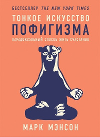

Счастье - это логично
 Не так давно я начал читать книгу Марка Менсона "Тонкое искусство пофигизма". Отчасти банально, отчасти заставляет задуматься. Есть множество прописных истин, которые всем известны, но в то же время настолько избиты, что мы им не следуем или вообще не воспринимаем их, как что-то, что стоит у тебя навиду на полке шкафа уже много лет и превратилось из самостоятельного объекта в некий неотъемлимый элемент интерьера. Похоже, что эта книга - попытка ткнуть нас носом в несколько таких прописных истин, заставить достать их с полки, стряхнуть с них пыть и задуматься - зачем они вообще нужны и что из себя представляют.
Как и большинство вещей в этом мире, более сложные идеи можно разложить на более простые для понимания постулаты. Конечно, неплохо было бы сначала дочитать книгу до конца, а затем делать какие-то выводы, но кто мне помешает выкладывать в собственном блоге то, что мне приходит в голову по мере поглощения какой-либо информации?
Итак, на текущий момент вот несколько основных идей. Скажем так - краткое изложение пятой части.
Основная идея достаточно проста: умейте осмысленно подходить к тому, что вы считаете для себя по-настоящему важным и то, на что стОит тратить свои нервы и душевные ресурсы, а на что можно плевать с высокой колокольни.
Вторая идея - находясь в обществе потребления, наше сознание формируется таким образом, что на сознательном или подсознательном уровне мы считаем, что наша жизнь станет лучше, если в ней появится что-то новое, чего у нас нет - новая машина, новая работа, новые отношения, но на самом деле это в большинстве случаев не так.
Третья идея заключается в том, что наша жизнь - это череда больших и малых физических и душевных страданий. Эти страдания так или иначе неизбежны, но то, насколько легко мы их переносим, зависит исключительно от нас. Боль полезна и закономерна - она является нашим защитником от повторения негативного опыта, страдания заставляют нас развиваться и эволюционировать. Если в нашей жизни нет каких-то серьёзных проблем, то их место займут проблемы, придуманные нами и для нас важным станет то, что на самом деле яйца выеденного не стОит. Мы так устроены, что без страданий мы не можем.
Основные идеи
Для удобства я назову эти идеи первой, второй и третьей. С первой идеей я полностью согласен. Сознательно. А вот на практике получается совершенно не так. Есть множество вещей, которые меня почему-то заботят существенно сильнее, чем должны были бы. Я действительно переживаю, когда что-то идёт не так, как я себе это представляю в своём идеальном мире. То пони не жрёт радугу, то в радуге цвета следуют не в каноническом порядке, то гадить вышеобозначенное пони начинает не бабочками, а неожиданно вполне прозаичным дерьмом. И вот, вместо того, чтобы сходить с женой погулять, я сижу и убираю понячье дерьмо что-то истошно программирую, паяю, настраиваю, изучаю даташиты на новый микроконтроллер. Я не могу оторваться, потому что у меня возникает паника - выходные очень быстро заканчиваются, а я опять не успел доделать то и это и ещё лежит миллион непрочитанных статей в очереди, десятки часов недослушанных подкастов, списки невыученных английских слов, не перенесён домашний сервер на балкон, не убраны следы ремонта и так далее и тому подобное. И ведь со временем, открывая для себя новые сферы развития, ты тем самым увеличиваешь список того, чего ты ещё не знаешь, но очень хотел бы знать. Если остановиться и задуматься, то намного важнее высыпаться, следить за своим здоровьем, больше времени уделять семье, ведь так или иначе, изучить то, что создавали тысячи людей на протяжении долгих лет, физически не представляется возможным. Всё это банально и мало кто с этим утверждением бы поспорил, но тем не менее, воз и ныне там. У меня не получается себя изменить, оказывается, это очень и очень непросто. Желание что-то создать своими руками или разумом действует как наркотик. Попробовав раз - ем и сейчас. Оглядываясь вокруг себя, я вижу достаточно много людей, подобных себе, меняются только сферы приложения усилий - кто-то сублимируется в работу, кто-то увлечён музыкой, кто-то собак разводит. Где находится та призрачная грань, до которой мы являемся нормальными адекватными (по мнению окружающих, конечно же) людьми, а после - упоротыми "наркоманами" своего дела? Нам в массе своей уже не нужно заботиться о действительно важных вещах из разряда "что съесть, чтобы не сдохнуть" и "как не замёрзнуть за ночь". По пирамиде Маслоу мы карабкаемся всё выше и выше. Для нас это уже пирамида "Маслоу с Хлебоу и Повидлоу", мы на самой верхушке и чтобы стать ещё повыше, притащили с собой на эту верхушку табуретку, забрались на неё и уже подумываем о стремянке. Поцелуя в точку сочленения спины с ногами только не хватает. Господа офицеры, со всей ответственностью заявляю: мы зажрались!
Ожидания и реальность
В отношении второй идеи - как известно, часто мы испытываем бОльшее количество положительных эмоций в предвкушении получения чего-либо, нежели в тот момент, когда мы это уже получили. Но в этом пункте я бы с Мэнсоном не согласился. Бывают исключения. И что интересно, чем дОльше я живу, тем больше приятных исключений появляется в моей жизни. Но давайте для начала отделим мухи от котлет и зёрна от плевел. Обладание некими материальными ценностями и личные отношения - это разные сферы, которые сравнивать некорректно, поэтому сначала о вещах. У многих было такое - мы видим нечто, чем хотели бы обладать, мы это приобретаем путём тех или иных усилий и затем, в процессе использования возможны три условных варианта развития событий и различные градации между ними:
- мы обнаруживаем один за другим множество недостатков, в итоге мы остаёмся разочарованы - вещь не оправдала наших ожиданий
- в принципе всё соответствует нашим ожиданиям, но вещь нам наскучивает и оседает на полке - это естественная потеря интереса
- мы находим дополнительные неочевидные достоинства этой вещи, она нам нравится всё больше и мы получаем удовольствие от её использования продолжительный срок после приобретения
С первыми двумя случаями всё предельно понятно и знакомо каждому. Например, для того, чтобы прийти к пониманию, своей нелюбви к автомобилям и отсутствия их необходимости в моей жизни, мне потребовалось несколько лет, в течение которых авто покрывалось на стоянке пылью или снегом в зависимости от времени года, а я при наличии машины передвигался пешком и на общественном транспорте - мне так было проще и удобнее. Для меня машина - источник головной боли и нервотрёпки. Избавив себя от машины, я стал намного счастливее, теперь я могу больше часа в день слушать любимые подкасты и аудиокниги, находясь в пути до работы, не отвлекаясь на дорогу, у меня есть хоть немного физической активности, я не ищу мучительно каждый день место для парковки, не трачусь на бензин и мойку, а в случае необходимости вызываю такси. Так что не только приобретение какой-то вещи способно улучшить качество нашей жизни, но и избавление от оной в каких-то случаях, а избавлению могут препятствовать разные причины - воспоминания, связанные с этой вещью, её стоимость, усилия, потраченные на её получение и тому подобное.
В отношении третьего варианта - многие скажут, что скорее это исключение из правила и случается редко. Но опять же, зависит исключительно от нас - вещь нас будет радовать и удовлетворять нашим ожиданиям в том случае, если наши ожидания от её качеств изначально были достаточно близки к реальности. Другими словами, в эпоху, когда интернет доступен каждому, то, насколько вы будете разочарованы, либо наоборот - насколько будете удовлетворены, зависит от того, сколько усилий и времени вы готовы потратить на получение и изучение информации об этой вещи. Помните, если даже это достаточно простая вещь и стоит 10 долларов, но вы собираетесь пользоваться этим долго, то поджигать вашу задницу она может на всю тысячу баксов несколько лет подряд, если в ней что-то сделано конкретно не так, как вы этого ожидали. В текущий момент меня окружает множество вещей, которыми я пользуюсь годами и которые удовлетворяют моим требованиям и ожиданиям, более того - приносят удовольствие от их использования и их становится всё больше. Это может быть что угодно, но как правило, перед получением этой вещи я либо потратил существенное количество времени на чтение форумов, отзывов, просмотр обзоров на ютубе, либо перебрал определённое количество аналогичных вещей. Каждая вещь решает свои задачи, если она эти задачи решает хорошо и таких вещей много, то качество нашей жизни в целом неминуемо повышается.
О личных отношениях сложно сказать что-то новое, могу разве что порекомендовать психолога Капранова - с тем что он говорит, я в большинстве случаев склонен соглашаться. Очень советую послушать, хуже точно не будет. Из собственного же опыта следует, что заводить отношения имеет смысл тогда, когда ты уже научился жить в гармонии с самим собой, быть самодостаточным и независимым (наличие чувств, общих интересов, комфорта совместого общения, взаимного уважения и всё прочее - само-собой разумеется, должно так же присутствовать). Если ты ищешь отношений, пытаясь убежать от тоски, одиночества или самого себя, то ничего хорошего из этого обычно не получается, в результате кто-то неизбежно тянет одеяло на себя, а кто-то становится ведомым, всё это не способствует равновесию в отношениях. И один из очень важных кирпичей фундамента - юмор! Если вам кажутся смешными одинаковые вещи и шутки друг-друга, это очень хороий знак.
Боль и страдания
Ну и напоследок о страданиях. Если упростить, то на мой взгляд в жизни есть два вида фигни - фигня существенная, острая и резкая, как удар серпом по фаберже и фигня пролонгированного действия, тянущаяся, как резинка от трусов и выматывающая, как чистка унитаза зубочисткой. Так вот, фигня второго типа зачастую является логическим продолжением первой фигни и выражается в наших переживаниях. Например, у вас случилось что-то нехорошее и существенное для вас, например, вы упустили шанс поступить в желаемый вуз/получить желаемую работу/умер любимый хомячок или ещё что-то посерьёзнее (давайте не будем совсем уж про негатив) - одним словом, фигня первого типа уже полностью состоялась. И тут она плавно перетекает в фигню второго типа. Мы выматываем себя, постоянно мысленно возвращаемся в прошлое, проигрываем разные варианты развития событий, думаем о том, как можно было всё исправить, виним себя за то, что чего-то не сделали и так далее. И вот, фигня первого типа уже давно бы скрылась за горизонтом, но вы тащите её за собой, будто чугунный шар, прикованный цепью к вашей ноге. Эта цепь - как раз фигня второго типа. Радости и позитива этот утяжелитель вам не доставляет, но отпустить вы его не можете. Но нужно учиться. В книге Мэнсона как раз о том, как.
Я себе представлял нашу жизнь как пустой чердак. Чем его наполнишь - в окружении того и будешь жить дальше. Можно принести на чёрдак дохлую кошку, которая будет вонять, а ты будешь периодически об неё спотыкаться и материться: "Грёбаная кошка, ещё и воняет! Вся жизнь дерьмо, да какого же хрена всё не так?". И всё это вместо того, чтобы сделать усилие и вынести эту кошку на помойку, а вместо неё поставить горшок с цветами, скажем. Да и вообще прибрать на своём чердаке, избавиться от хлама, помыть полы и повесить новую занавеску. Старайтесь обращать больше внимания на то, что доставляет вам радость и меньше - на то, что приносит негатив, но не забывайте делать усилия, чтобы выносить своих кошек, сами они могут и не уйти. Может быть ваши кошки воняют уже не так сильно и тоже успели стать деталью интерьера?
Теги: мысли-вслух, книги